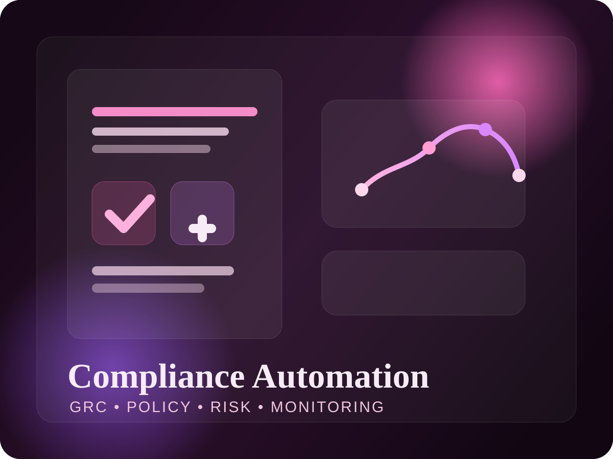
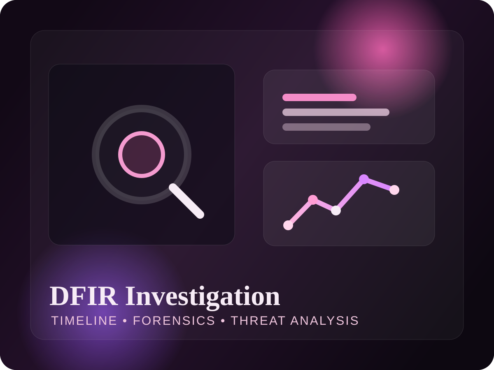

Devices forensically imaged
Cybersecurity Professional | Detection Engineer
Aparna Sajeev
Cybersecurity professional focused on detection engineering, digital forensics, and secure cloud operations.
Cybersecurity graduate from Roosevelt University with hands-on experience in detection engineering, digital forensics, and cloud security operations. I work across Splunk, SIGMA, YARA, AWS, and forensic tooling to strengthen visibility, automate compliance, and protect critical infrastructure.

Role: Cybersecurity Professional
Specialization: Detection Engineering & DFIR
Core Tools: Splunk, SIGMA, YARA, AWS
Focus Area: Cloud Security & Threat Analysis
Goal: Build resilient, security-first operations
M.S. Cybersecurity completion
Cloud Developing certified
Investigation and detection focus
Detection Engineering
Digital Forensics
Cloud Security
Threat Analysis
GRC Automation
Splunk SIEM
YARA + SIGMA
Detection Engineering
Digital Forensics
Cloud Security
Threat Analysis
GRC Automation
Splunk SIEM
YARA + SIGMA
Featured Projects
Security projects built around detection logic, forensic clarity, and scalable controls.

GRC Platform
Compliance Automation & Monitoring Platform
Scalable platform built with Node.js, React, and AWS to automate GDPR, HIPAA, and CCPA policy generation alongside risk assessments and monitoring workflows.
Detection notes
Designed to reduce manual compliance overhead while improving visibility across policy gaps, remediation tasks, and cloud-based governance signals.

DFIR Investigation
Compromised System Analysis
Deep-dive forensic investigation using Volatility and Splunk to reconstruct attack timelines and generate YARA and SIGMA signatures for threat detection.
Attack timeline
Focused on memory analysis, event correlation, and translating findings into durable detections for future incident response use.
Core Skills
Technical strengths across operations, forensics, cloud, and engineering.
Security & Ops
Detection Engineering, Incident Response (DFIR), Threat Analysis, Penetration Testing
Cloud
AWS (EC2, S3, Lambda, DynamoDB, API Gateway, IAM), Kubernetes
Forensics
Wireshark, EnCase, FTK Imager, Autopsy, Volatility
Dev & Analytics
Python, Splunk, SIGMA, YARA, SQL, Node.js, React
Capability Snapshot
Security domains mapped to practical execution.
Detection Engineering
92%
Digital Forensics
89%
Cloud Security
85%
GRC Automation
87%
Professional Summary
Experience & Credentials
Sutherland Global Services
Analyzed fraud patterns, supported escalations, and guided teams on security-conscious handling.
Clue 4 Evidence
Executed forensic imaging on 50+ devices and produced court-admissible forensic reporting.
Education
M.S. in Cybersecurity and Information Assurance
Certifications
Cloud Developing completed, with Security+ currently in progress.
Contact
Open to cybersecurity roles, security operations teams, and detection-focused opportunities.
I’m actively interested in opportunities across detection engineering, DFIR, threat analysis, and cloud security, and I’m always happy to connect with recruiters and hiring teams.